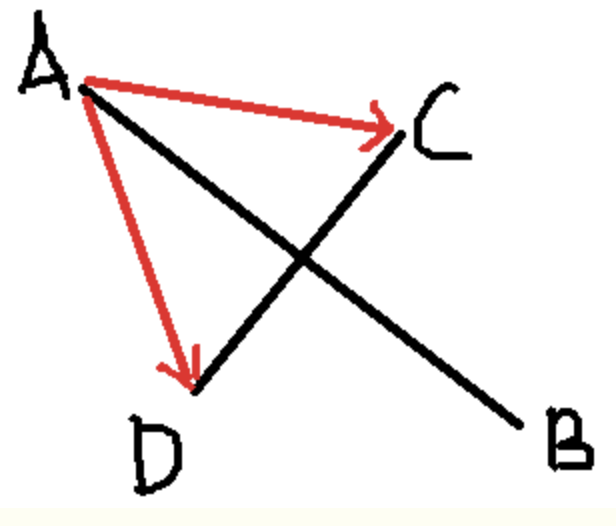

4.9. 车流量统计
学习目标
- 了解车流量统计的方法
- 实现车流量检测
1.基于虚拟线圈法的车辆统计
基于虚拟线圈的车流量统计算法原理与交通道路上的常见的传统的物理线圈类似，由于物理线圈需要埋设在路面之下，因此会有安装、维护费用高，造成路面破坏等问题，而采用基于视频的虚拟线圈的车辆计数方法完全避免了以上问题，且可以针对多个感兴趣区域进行检测。
虚拟线圈车辆计数法的原理是在采集到的交通流视频中，在需要进行车辆计数的道路或路段上设置一条或一条以上的检测线对通过车辆进行检测，从而完成计数工作。检测线的设置原则一般是在检测车道上设置一条垂直于车道线，居中的虚拟线段，通过判断其与通过车辆的相对位置的变化，完成车流量统计的工作。如下图所示，绿色的线就是虚拟检测线：
在该项目中我们进行检测的方法是，计算前后两帧图像的车辆检测框的中心点连线，若该连线与检测线相交，则计数加一，否则计数不变。
那怎么判断两条线段是否相交呢？
假设有两条线段AB，CD，若AB，CD相交，我们可以确定：
1.线段AB与CD所在的直线相交，即点A和点B分别在直线CD的两边；
2.线段CD与AB所在的直线相交，即点C和点D分别在直线AB的两边；
上面两个条件同时满足是两线段相交的充要条件，所以我们只需要证明点A和点B分别在直线CD的两边，点C和点D分别在直线AB的两边，这样便可以证明线段AB与CD相交了。

在上图中，线段AB与线段CD相交，于是我们可以得到两个向量AC，AD，C和D分别在AB的两边，向量AC在向量AB的逆时针方向，AB×AC > 0；向量AD在向量AB的顺时针方向，AB×AD < 0，两叉乘结果异号。
这样，方法就出来了：如果线段CD的两个端点C和D，与另一条线段的一个端点（A或B，只能是其中一个）连成的向量，与向量AB做叉乘，若结果异号，表示C和D分别在直线AB的两边，若结果同号，则表示CD两点都在AB的一边，则肯定不相交。
所以我们利用叉乘的方法来判断车辆是否经过检测线。
2.实现
实现车流量检测的代码如下：
1.检测AB和CD两条直线是否相交
# 检测AB和CD两条直线是否相交
def intersect(A, B, C, D):
return ccw(A, C, D) != ccw(B, C, D) and ccw(A, B, C) != ccw(A, B, D)
# 计算有A，B，C三点构成的向量CA，BA之间的关系，
def ccw(A, B, C):
return (C[1] - A[1]) * (B[0] - A[0]) > (B[1] - A[1]) * (C[0] - A[0])
- 遍历跟踪框判断其与检测线是否相交，并进行车辆计数
# 遍历跟踪框
for box in boxes:
(x, y) = (int(box[0]), int(box[1])) # 计算跟踪框的左上角坐标
(w, h) = (int(box[2]), int(box[3])) # 计算跟踪框的宽和高
color = [int(c) for c in COLORS[indexIDs[i] % len(COLORS)]] # 对方框的颜色进行设定
cv2.rectangle(frame, (x, y), (w, h), color, 2) # 将方框绘制在画面上
"""
根据当前帧的检测结果，与上一帧检测的检测结过，进行虚拟线圈完成车辆计数：车流量统计
"""
if indexIDs[i] in previous:
previous_box = previous[indexIDs[i]] # 获取上一帧识别的目标框
(x2, y2) = (int(previous_box[0]), int(previous_box[1])) # 获取上一帧画面追踪框的左上角坐标
(w2, h2) = (int(previous_box[2]), int(previous_box[3])) # 获取上一帧画面追踪框的宽和高
p0 = (int(x + (w - x) / 2), int(y + (h - y) / 2)) # 获取当前帧检测框的中心点
p1 = (int(x2 + (w2 - x2) / 2), int(y2 + (h2 - y2) / 2)) # 获取上一帧检测框的中心点
cv2.line(frame, p0, p1, color, 3) # 将前后两帧图像的检测结果中心连接起来
"""
进行碰撞检测-前后两帧检测框中心点的连线穿过基准线，则进行计数
"""
if intersect(p0, p1, line[0], line[1]):
# 总计数加1
counter += 1
# 判断行进的方向
if y2 < y:
counter_down += 1 # 逆向行驶+1
else:
counter_up += 1 # 正向行驶+1
总结
- 基于虚拟线圈的目标检测，是设置一个垂直于车道的检测线，判断跟踪车辆与检测线之间的关系，完成车辆计数
- 利用叉乘的方法来检验车辆是否与检测线相交